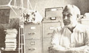
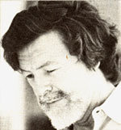
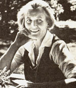

During his 20 years with We US. Navy, William Heronemus worked long and hard to- help develop the nuclear sub marine. Largely because of that fact the "retired" naval officer is today a knowledgeably vocal opponent of nuclear power ... a nd one of the nation's strongest advocates of alternative energy sources.
Say "wind power" to Bill Heronemus, and you'll reap a whirlwind of facts and figures and potentials in response. This man, now a professor of mechanical engineering at the University of Massachusetts, is a perpetual idea machine when it comes to possible uses of air motion for heating, cooling, and electricity.
Since there are more windy days than sunny ones in many northern areas of the U.S. and Canada, Bill says, wind power may be even more practical in those regions than is solar energy ... although ideally the two "alternatives" should work well together. The professor's "Wind Furnace", for, example, consists of a 32-1/2foot, three-bladed wind turbine on a 60-foot mast and also incorporates solar plate collectors. The combined system currently provides at least 80% of the warmth needed (even in chilly Amherst, Massachusetts) at Solar Habitat I, an energy- conservative house designed to demonstrate the Wind Furnace's operation. Water in an insulated thermal storage tank is heated both by the solar collectors and by wind-generated electricity that's fed to resistance heaters immersed in the liquid ... which, in turn, circulates through a series of conventional baseboard hot water convectors.
A second system undergoing laboratory trials uses a wind-driven "churn" that (by mechanical action alone, which is less expensive than the electrical methods) stirs an antifreeze/water mixture in a storage tank to just under the boiling point.
What we can accomplish with wind power depends partly upon the size of Me propellors we put up ("Properly designed, a 40-foot wheel can be beautiful," says Bill), so maximum potential can probably be realized only if the utility companies are persuaded to participate. Heronemus visualizes monster wind rigs floating offshore, for example: "bridges turned on end", with multiple giant blades Mat will seize and transmit the immense power of the coastal blasts to provide much of the energy required by the eastern states. The northern plains are another area where "big blows" are sufficiently strong and frequent to generate an alternate (and inexhaustible) source of electrical power.
"There's no end to the kinds of applications that are feasible," says Heronemus. "All that's required to accomplish them is a 24-hour day ... and an indefinite life span! " - Preston Gralla.
Back in the nineteenth century, America had Oliver Wendell Holmes, who successfully combined strenuous and innovative careers in medicine and literature. Dr. Holmes's twentieth century counterpart appears to be Herbert Leon Newbold, Jr.: internist, psychiatrist, teacher, novelist, and author of medical nonfiction.
Dr. Newbold has published eight novels (seven using a pseudonym, and A Third of an Inch of French Bread under his own name) plus three books that deal with the medical aspects of food. MegaNutrients for Your Nerves blazed a trail in what the author/doctor calls "nutritional psychiatry". Dr. Newbold's Revolutionary New Discoveries About Weight Loss explores the role that allergies play in the widespread problem of obesity. The most recent volume, published this year by Ballantine, is Vitamin C Against Cancer a collection of the various medical opinions and research studies made available thus far that deal with nutritional therapy for cancer ... especially (as Newbold puts it) the hopeful promise of "the big C against the other big C".
Add the name of Dr. H.L. Newbold to a growing list of physicians and scientists who are pursuing the usable and therapeutic implications of an old saw: We are what we eat. - PF.
The governor's "mansion" in Oregon is a 120-year-old farmhouse where Pat Straub-wife of Governor Robert Straub-practices the happy health policies she preaches: old-fashioned homestead living ... organic gardening ... and healthful, hearty recreation. Together with children and grandchildren, Mrs. Straub not only jogs and backpacks, rafts wilderness rivers and rides horseback ... but manages to grow-and prepare or preserve-most of the fruits and vegetables her bustling household consumes!
This "lady with a hoe" has made a name for herself as the author of From the Loving Earth (released by Dutton in 1977). The book is about organic gardening the easy Pat Straub way ... which is to say, about growing-in cooperation with nature-fresh, untainted vegetables and fruits.
In addition, one section of the volume contains a generous selection of Pat's own recipes, designed to preserve the vital enzymes, vitamins, minerals, and flavor in the food she grows. But don't overemphasize cooking, Pat cautions. "Children who turn up their noses at cooked vegetables will often eat fresh, raw ones," she points out. So she champions the family root cellar as a source of year-round fresh food: 'If you don't have a root cellar, improvise one . . with a pile of straw, a box of sand, or a bushel of leaves in a barrel buried in a hillside. "
The book, in short, is a way of sharing some of the practices that have enabled Oregon's first lady to maintain her own youthful vigor ... keep Governor Bob fit for the strenuous demands of public and private duties ... and raise five robust children who are now bringing up youngsters of their own in the same contented, self-sufficient, and down-to-earth way. - Judy Hammersmark.
|
|
 |
 |
|
 |
|
|